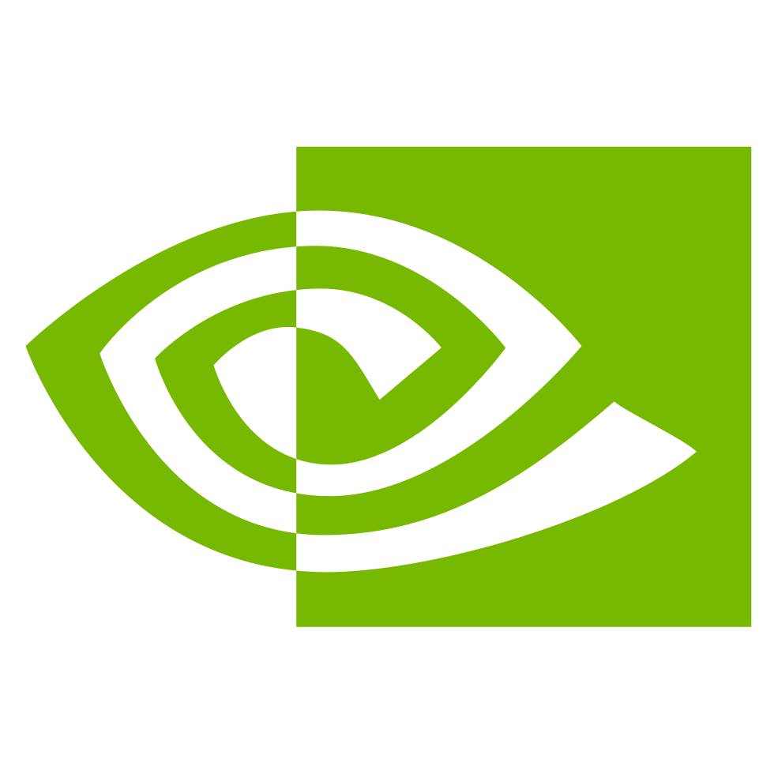
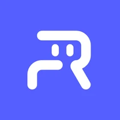

40–50%
Lower tail latency than existing cloud providers.
320 ms
DreamZero 14B inference.
Beats NVIDIA's reported speed, with half the silicon
8+ robots
Running concurrently
on one H100.
Choose a model.
Connect your robot.
We handle the compute.
Run models like DreamZero and MolmoAct2 in the cloud. We optimize the model, GPU kernels, and network to bring inference closer to your robot.
On-demand compute for the way robotics teams work: experiment, iterate, deploy.
Why we’re building this ↗One platform.
The whole stack.
Performance is more than a fast model. We optimize the layers underneath it, so you don't have to.
Model
GPU kernels
Network
Real-Time Chunking (RTC)
Start with a frontier model.
Or bring your own.
Examples of providers whose models we can onboard.

NVIDIA- Ai2
- Physical Intelligence

Robbyant- Perceptron
 Hugging Face
Hugging Face
Your checkpoint.
Fine-tuned for your robot.
Trained for your task.
Let’s get it running in the cloud.